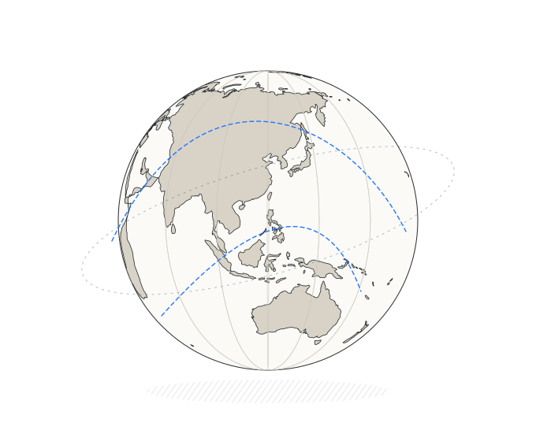
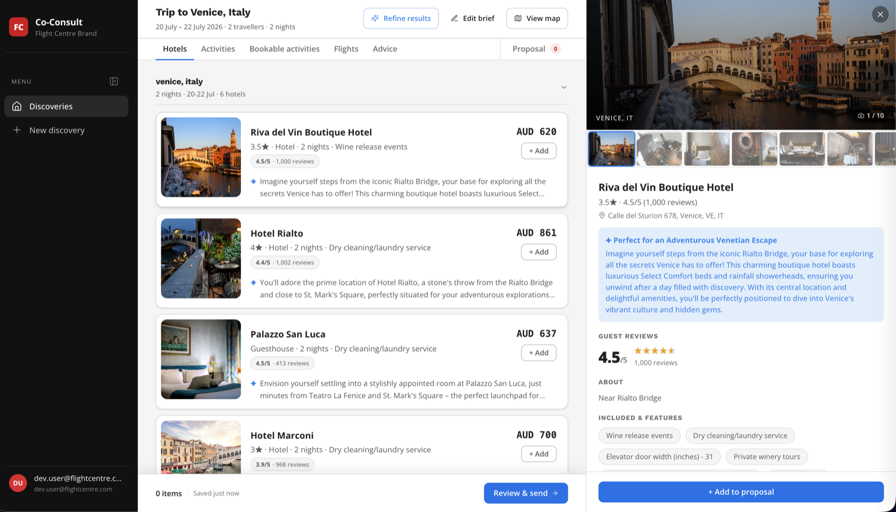
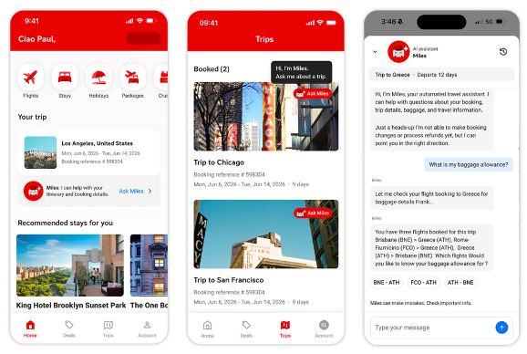
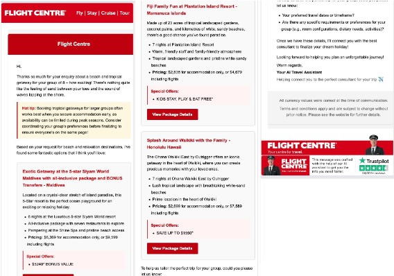
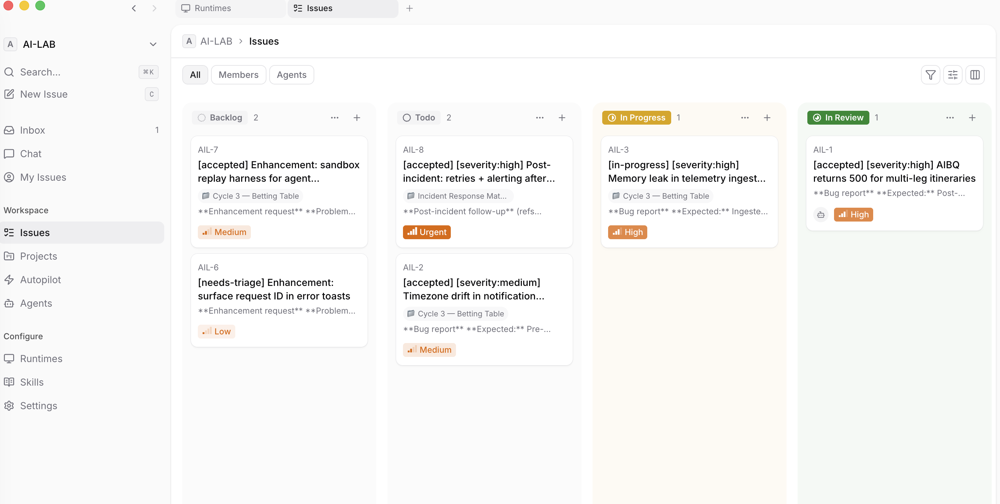
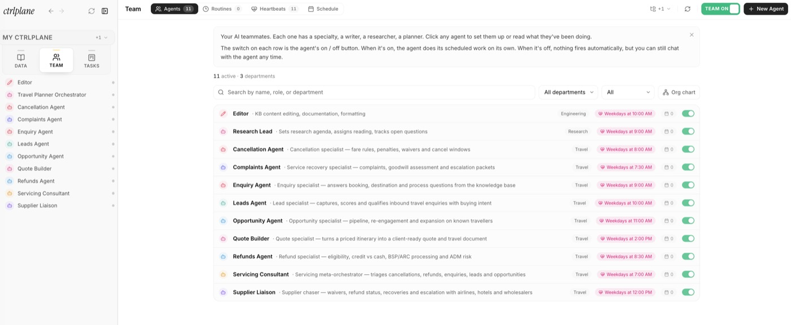
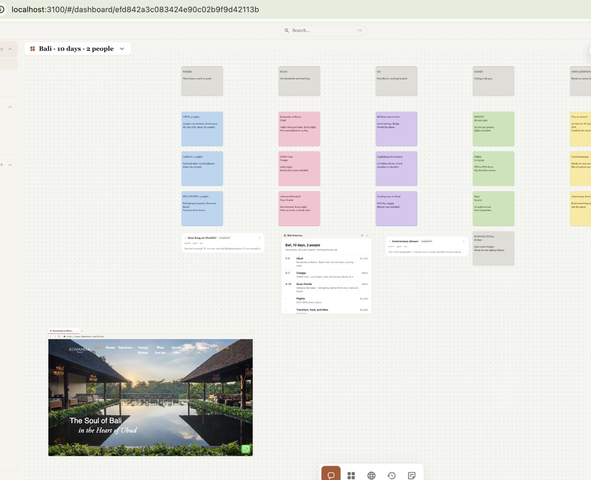

01 / OPEN STACKILLUSTRATIVE
01 / OPEN STACK
Agentic Travel Framework
Build agents as small, checked steps. Give them trusted travel tools. Coordinate the parts of a booking toward one complete outcome.
Explore the framework ↗
Research, tools and products for agents you can trust with a real trip—and real money.
An agent that spends money needs more than a model. It needs clear limits, dependable tools, a place to run and products that work for people.
The same care should follow an action from a supplier connection to a consultant’s screen to a traveller’s booking.
Build agents as small, checked steps. Give them trusted travel tools. Coordinate the parts of a booking toward one complete outcome.
Explore the framework ↗Agents prepare quotes, bookings, changes and policy work. Consultants review the important decisions and approve the next step.
Explore Agentic TMS ↗Book through an AI assistant or a brand’s own app. Keep looking after the trip, from the first question until the traveller is home.
Explore B2C AI ↗A supplier connects once. Its supported offers and actions become available to compatible agents, with the same rules in place.
Explore B2B AI ↗A traveller asks. Agents bring the options together. A person approves the next step.
A request becomes one complete trip.
Daniel’s trip is booked · care continues until departure
Tools for the everyday. Models for what comes next. Explore the products, concepts and research taking shape across Leisure AI.

Bring hotels, flights, activities and advice into one workspace. Co-consult keeps the brief in mind, explains its shortlists and helps the consultant build a coherent proposal.

A booking query assistant inside the Leisure app. Travellers can ask about their itinerary, baggage and trip details by text or voice. Its scope is existing bookings; changes go to the right person.

Read a customer’s holiday enquiry, understand what they have in mind and match it to available offers. IQR prepares a branded proposal so consultants have something useful to follow up.

Give an AI agent the first pass on a bug or incident. Conductor helps it reproduce the problem in a sandbox, investigate the cause and draft a fix on the team’s own machines and repositories. Engineers review the evidence, validate the change and approve what ships.
The aim is less time reconstructing problems and more time reviewing useful work. Agent actions are recorded as issue comments. The rollout starts inside AI-LAB, then expands to other engineering and operations teams once the workflows are proven.

Specialist agents help work the post-sale queue: cancellations, refunds, enquiries and supplier follow-up. They gather the facts and prepare the next step. Decisions that spend money wait for a person.

A shared board for the ideas, options and decisions that usually get lost across messages and tabs. Put the itinerary, stays and trade-offs side by side, so the consultant and traveller can shape the plan together.
Build focused models from consultant choices, travel preferences and booking outcomes. The research spans ranking, trip recommendations and understanding where an intervention makes a difference.
Explore how agents learn to reason, use tools and improve through feedback. Test in a sandbox, evaluate with consultants, then move proven behaviour into smaller models where it makes sense.

Waypoint scores a supplied set of options instead of writing an answer. Rank narrows a large pool; Decide compares the shortlist and reports confidence. Uncertain decisions can go to a language model or consultant.
Lens is a proposed review console. This diagram shows a saved model run, not a live prediction.
Product screens and concepts from the Leisure AI portfolio. Screens show example content; research and proposals are labelled.
Explore the businesses taking shape at Travellabs. See who each one helps, the problem it solves and how it could make a difference.
Explore all nine businesses ↗Built by Rimon R for Travellabs